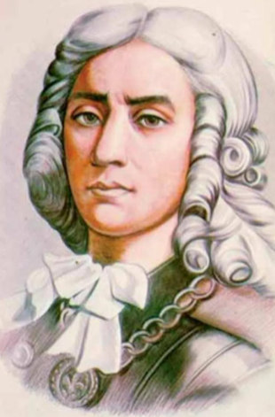

ТЕОРЕТИЧЕСКИЙ ЛИЦЕЙ ИМЕНИ ДМИТРИЯ КАНТЕМИРА мун. Бэлць приветствует Вас на своем информационном портале.
Здесь Вы найдете всю необходимую информацию о нашей деятельности, планах на будущее, а также много полезного и интересного. Приятного путешествия в мир знаний!
*Для удобной навигации по сайту, используйте меню.
Важную роль в любом образовательном учреждении играет педагогический коллектив, включающий в себя учителей и административных работников и обеспечивающий успешное функционирование данного учреждения. Необходимо отметить, что наш преподавательский состав — это единомышленники, которые свой труд и профессионализм направляют на достижение одной общей цели: строительство образовательного процесса и воспитательной системы на принципах гуманизма и равноправия, взаимного уважения и поддержки.
Благодаря единым взглядам, пониманию коллективной и индивидуальной ответственности, уровню профессионализма и компетентности, мы создали коллектив, обеспечивающий комфортный психологический микроклимат для каждого педагога и учащегося.
Внедрение современных методик образования, разработка эффективных инструментов и техник помогает нам в решении педагогических задач, повышении эффективности и качества процесса обучения.
Приоритетными направлениями деятельности нашего коллектива, помимо высокого уровня качества преподавания, являются раскрытие потенциала, творческих возможностей и способностей личности и их реализация, развитие в наших воспитанниках мотивации к познанию, а также формирование уникального взгляда на окружающий их мир.
Слаженная работа коллектива помогает формировать наших учеников как интеллектуально развитых, образованных, культурных личностей, гармонично существующих в рамках современного общества.
Мы любим свою работу, гордимся успехами и достижениями наших выпускников. Мы рады, что являемся одной большой и дружной семьей.
Мурзак Анжела Григорьевна
директор Теоретического Лицея имени ДМИТРИЯ КАНТЕМИРА
Герман Оксана Григорьевна
заместитель директора по учебно-воспитательной работе
Карапчевски Андриана Васильевна
заместитель директора по учебно-воспитательной работе
Гуменюк Алла Александровна
заместитель директора по учебно-воспитательной работе
Маршалковски Галина Владимировна
заместитель директора по учебно-воспитательной работе
МЕТОДИЧЕСКАЯ КОМИССИЯ УЧИТЕЛЕЙ СОЦИО-ГУМАНИТАРНОГО ЦИКЛА
МЕТОДИЧЕСКАЯ КОМИССИЯ УЧИТЕЛЕЙ РУМЫНСКОГО ЯЗЫКА И ЛИТЕРАТУРЫ
МЕТОДИЧЕСКАЯ КОМИССИЯ УЧИТЕЛЕЙ ИНОСТРАННЫХ ЯЗЫКОВ
МЕТОДИЧЕСКАЯ КОМИССИЯ УЧИТЕЛЕЙ МАТЕМАТИКИ И ИНФОРМАТИКИ
МЕТОДИЧЕСКАЯ КОМИССИЯ УЧИТЕЛЕЙ РУССКОГО ЯЗЫКА И ЛИТЕРАТУРЫ
МЕТОДИЧЕСКАЯ КОМИССИЯ УЧИТЕЛЕЙ НАЧАЛЬНЫХ КЛАССОВ
МЕТОДИЧЕСКАЯ КОМИССИЯ УЧИТЕЛЕЙ ТЕХНОЛОГИИ, ИСКУССТВА И СПОРТА
МЕТОДИЧЕСКАЯ КОМИССИЯ УЧИТЕЛЕЙ ЕСТЕСТВЕННЫХ НАУК
 +373 231 234 58
+373 231 234 58
 post@dcantemir.md
post@dcantemir.md